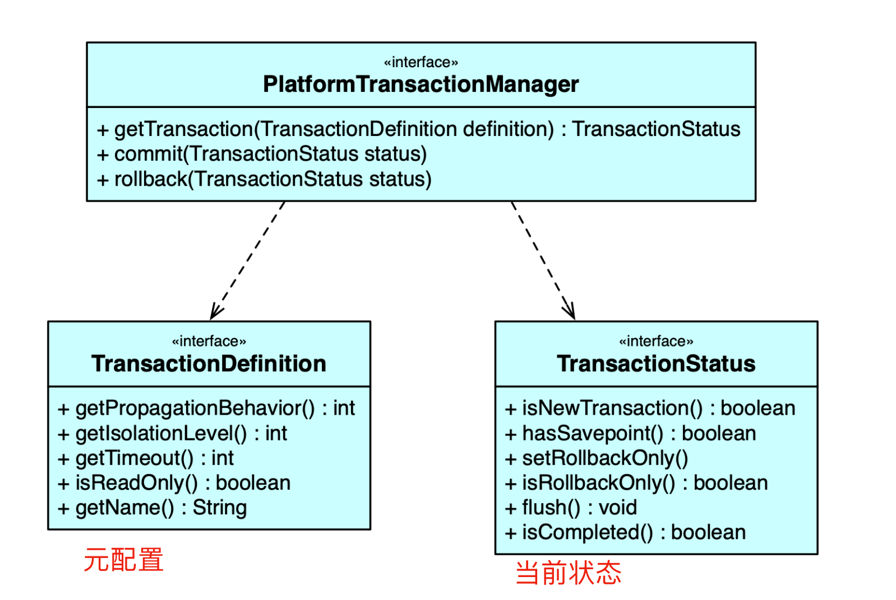
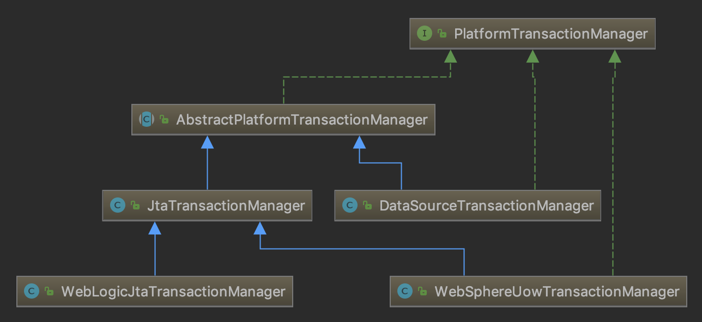
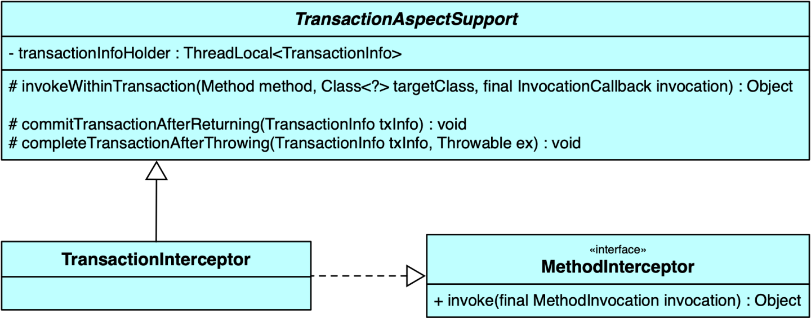

<!DOCTYPE html>
<html>
<head><meta name="generator" content="Hexo 3.9.0">
  <meta charset="utf-8">
  
  <title>Spring 与数据库 | 守株阁</title>
  <meta name="viewport" content="width=device-width, initial-scale=1, maximum-scale=1">
  <meta name="description" content="Java 执行事务的过程 1.获取连接 Connection con = DriverManager.getConnection()2.开启事务con.setAutoCommit(true/false); 在 Spring 事务里（如 DataSourceTransactionManager 的 doBegin 方法）里，总是会显式地 con.setAutoCommit(false);（不然哪有事">
<meta name="keywords" content="Java,Spring">
<meta property="og:type" content="article">
<meta property="og:title" content="Spring 与数据库">
<meta property="og:url" content="http://yoursite.com/2020/07/19/Spring-与数据库/index.html">
<meta property="og:site_name" content="守株阁">
<meta property="og:description" content="Java 执行事务的过程 1.获取连接 Connection con = DriverManager.getConnection()2.开启事务con.setAutoCommit(true/false); 在 Spring 事务里（如 DataSourceTransactionManager 的 doBegin 方法）里，总是会显式地 con.setAutoCommit(false);（不然哪有事">
<meta property="og:locale" content="zh-Hans">
<meta property="og:image" content="http://yoursite.com/2020/07/19/Spring-与数据库/事务管理器-class-diagram1.png">
<meta property="og:image" content="http://yoursite.com/2020/07/19/Spring-与数据库/transaction-manager-hiarachy.png">
<meta property="og:image" content="http://yoursite.com/2020/07/19/Spring-与数据库/TransactionAspectSupport.png">
<meta property="og:updated_time" content="2021-03-01T12:15:20.249Z">
<meta name="twitter:card" content="summary">
<meta name="twitter:title" content="Spring 与数据库">
<meta name="twitter:description" content="Java 执行事务的过程 1.获取连接 Connection con = DriverManager.getConnection()2.开启事务con.setAutoCommit(true/false); 在 Spring 事务里（如 DataSourceTransactionManager 的 doBegin 方法）里，总是会显式地 con.setAutoCommit(false);（不然哪有事">
<meta name="twitter:image" content="http://yoursite.com/2020/07/19/Spring-与数据库/事务管理器-class-diagram1.png">
  
    <link rel="alternate" href="/atom.xml" title="守株阁" type="application/atom+xml">
  
  
    <link rel="icon" href="/favicon.png">
  
  
  <link rel="stylesheet" href="/css/style.css">
  

<link rel="stylesheet" href="/css/prism.css" type="text/css">
<link rel="stylesheet" href="/css/prism-line-numbers.css" type="text/css"></head>
</html>
<body>
  <div id="container">
    <div id="wrap">
      <header id="header">
  <div id="banner"></div>
  <div id="header-outer" class="outer">
    
    <div id="header-inner" class="inner">
      <nav id="sub-nav">
        
          <a id="nav-rss-link" class="nav-icon" href="/atom.xml" title="RSS Feed"></a>
        
        <a id="nav-search-btn" class="nav-icon" title="搜索"></a>
      </nav>
      <div id="search-form-wrap">
        <form action="//google.com/search" method="get" accept-charset="UTF-8" class="search-form"><input type="search" name="q" class="search-form-input" placeholder="Search"><button type="submit" class="search-form-submit">&#xF002;</button><input type="hidden" name="sitesearch" value="http://yoursite.com"></form>
      </div>
      <nav id="main-nav">
        <a id="main-nav-toggle" class="nav-icon"></a>
        
          <a class="main-nav-link" href="/">首页</a>
        
          <a class="main-nav-link" href="/archives">归档</a>
        
          <a class="main-nav-link" href="/about">关于</a>
        
      </nav>
      
    </div>
    <div id="header-title" class="inner">
      <h1 id="logo-wrap">
        <a href="/" id="logo">守株阁</a>
      </h1>
      
        <h2 id="subtitle-wrap">
          <a href="/" id="subtitle">一切都是守株待兔，如切如磋，如琢如磨。I am just joking.</a>
        </h2>
      
    </div>
  </div>
</header>
      <div class="outer">
        <section id="main"><article id="post-Spring-与数据库" class="article article-type-post" itemscope itemprop="blogPost">
  <div class="article-meta">
    <a href="/2020/07/19/Spring-与数据库/" class="article-date">
  <time datetime="2020-07-19T01:47:18.000Z" itemprop="datePublished">2020-07-19</time>
</a>
    
  </div>
  <div class="article-inner">
    
    
      <header class="article-header">
        
  
    <h1 class="article-title" itemprop="name">
      Spring 与数据库
    </h1>
  

      </header>
    
    <div class="article-entry" itemprop="articleBody">
      
        <!-- Table of Contents -->
        
        <h1 id="Java-执行事务的过程"><a href="#Java-执行事务的过程" class="headerlink" title="Java 执行事务的过程"></a>Java 执行事务的过程</h1><blockquote>
<p>1.获取连接 Connection con = DriverManager.getConnection()<br>2.开启事务con.setAutoCommit(true/false); 在 Spring 事务里（如 DataSourceTransactionManager 的 doBegin 方法）里，总是会显式地 con.setAutoCommit(false);（不然哪有事务可言）。<br>3.执行CRUD<br>4.提交事务/回滚事务 con.commit() / con.rollback();<br>5.关闭连接 conn.close();</p>
</blockquote>
<h1 id="本文涉及到的类型的类图"><a href="#本文涉及到的类型的类图" class="headerlink" title="本文涉及到的类型的类图"></a>本文涉及到的类型的类图</h1><p></p>
<p><br></p>
<h1 id="Spring-的事务管理核心类型和流程"><a href="#Spring-的事务管理核心类型和流程" class="headerlink" title="Spring 的事务管理核心类型和流程"></a>Spring 的事务管理核心类型和流程</h1><h2 id="DataSource"><a href="#DataSource" class="headerlink" title="DataSource"></a>DataSource</h2><p>不同的数据源诞生不同的 DataSource。默认的 TransactionManager 本身是期待一个名叫“datasource”的数据源的。</p>
<h2 id="FactoryBean"><a href="#FactoryBean" class="headerlink" title="FactoryBean"></a>FactoryBean</h2><p>不同的 DataSource 装入不同的 FactoryBean，比如 JPA 的 EntityManagerFactory。</p>
<h2 id="PlatformTransactionManager"><a href="#PlatformTransactionManager" class="headerlink" title="PlatformTransactionManager"></a>PlatformTransactionManager</h2><p>桥接模式的实现端。</p>
<p>不同的 FactoryBean 装入不同的 PlatformTransactionManager，比如 JpaTransactionManager（实际上还可以被细分为 TransactionManager/EntityManager/SessionFactory/PersistenceUnit）。PlatformTransactionManager 管很多东西，如数据库方言、数据源（FactoryBean 也持有这个东西，但某些事务管理器宁愿自己冗余一份数据源方便自己处理）。</p>
<p>这个类型可以当做 API 用，但 Spring 官方推荐应该通过 AOP （所以它要被装入 Interceptor）或者 TransactionTemplate 使用。</p>
<p>它提供三个基本接口：</p>
<pre class="line-numbers language-java"><code class="language-java">    <span class="token comment" spellcheck="true">// 获取事务</span>
    TransactionStatus <span class="token function">getTransaction</span><span class="token punctuation">(</span><span class="token annotation punctuation">@Nullable</span> TransactionDefinition definition<span class="token punctuation">)</span>
            <span class="token keyword">throws</span> TransactionException<span class="token punctuation">;</span>

    <span class="token comment" spellcheck="true">// 提交事务</span>
    <span class="token keyword">void</span> <span class="token function">commit</span><span class="token punctuation">(</span>TransactionStatus status<span class="token punctuation">)</span> <span class="token keyword">throws</span> TransactionException<span class="token punctuation">;</span>

    <span class="token comment" spellcheck="true">// 回滚事务</span>
    <span class="token keyword">void</span> <span class="token function">rollback</span><span class="token punctuation">(</span>TransactionStatus status<span class="token punctuation">)</span> <span class="token keyword">throws</span> TransactionException<span class="token punctuation">;</span>
<span aria-hidden="true" class="line-numbers-rows"><span></span><span></span><span></span><span></span><span></span><span></span><span></span><span></span><span></span></span></code></pre>
<h2 id="TransactionDefinition"><a href="#TransactionDefinition" class="headerlink" title="TransactionDefinition"></a>TransactionDefinition</h2><p>事务定义 TransactionDefinition 包含很多属性：</p>
<ul>
<li>是否只读</li>
<li>事务隔离级别</li>
<li>事务传播级别</li>
<li>超时</li>
</ul>
<p>通过事务的定义，我们根据定义产生特定的事务实例 - 基本上 <code>@Transactional</code>注解里标记的信息都持有在这里。</p>
<h2 id="TransactionStatus"><a href="#TransactionStatus" class="headerlink" title="TransactionStatus"></a>TransactionStatus</h2><p>每个事务实例在 TransactionStatus 接口 里，事务管理器通过状态可以知道事务的状态信息，然后进行事务的控制。事务是否完成，是否是新的事务，是不是只能回滚等。</p>
<p>对于 TransactionDefinition 而言，transaction status object representing the new or current transaction。</p>
<h2 id="TxAdviceBeanDefinitionParser"><a href="#TxAdviceBeanDefinitionParser" class="headerlink" title="TxAdviceBeanDefinitionParser"></a>TxAdviceBeanDefinitionParser</h2><p>基于 xml的配置，由 TxAdviceBeanDefinitionParser 负责生成 TransactionInterceptor 对象。</p>
<h2 id="ProxyTransactionManagementConfiguration"><a href="#ProxyTransactionManagementConfiguration" class="headerlink" title="ProxyTransactionManagementConfiguration"></a>ProxyTransactionManagementConfiguration</h2><p>基于注解的配置，由 ProxyTransactionManagementConfiguration 负责生成 TransactionInterceptor 对象。</p>
<h2 id="TransactionInterceptor"><a href="#TransactionInterceptor" class="headerlink" title="TransactionInterceptor"></a>TransactionInterceptor</h2><p>TransactionInterceptor 继承了 TransactionAspectSupport（桥接模式的抽象端）。</p>
<p>它通过装入 PlatformTransactionManager ptm 来扩展 TransactionAspectSupport 的行为，类似桥接模式。</p>
<p>其事务执行关键代码是（注意，这段代码和 TransactionAspectSupport.invokeWithinTransaction是相互回调的关系）：</p>
<pre class="line-numbers language-java"><code class="language-java"><span class="token annotation punctuation">@Override</span>
    <span class="token keyword">public</span> Object <span class="token function">invoke</span><span class="token punctuation">(</span><span class="token keyword">final</span> MethodInvocation invocation<span class="token punctuation">)</span> <span class="token keyword">throws</span> Throwable <span class="token punctuation">{</span>
        <span class="token comment" spellcheck="true">// Work out the target class: may be {@code null}.</span>
        <span class="token comment" spellcheck="true">// The TransactionAttributeSource should be passed the target class</span>
        <span class="token comment" spellcheck="true">// as well as the method, which may be from an interface.</span>
        Class<span class="token operator">&lt;</span><span class="token operator">?</span><span class="token operator">></span> targetClass <span class="token operator">=</span> <span class="token punctuation">(</span>invocation<span class="token punctuation">.</span><span class="token function">getThis</span><span class="token punctuation">(</span><span class="token punctuation">)</span> <span class="token operator">!=</span> null <span class="token operator">?</span> AopUtils<span class="token punctuation">.</span><span class="token function">getTargetClass</span><span class="token punctuation">(</span>invocation<span class="token punctuation">.</span><span class="token function">getThis</span><span class="token punctuation">(</span><span class="token punctuation">)</span><span class="token punctuation">)</span> <span class="token operator">:</span> null<span class="token punctuation">)</span><span class="token punctuation">;</span>

        <span class="token comment" spellcheck="true">// Adapt to TransactionAspectSupport's invokeWithinTransaction...</span>
        <span class="token keyword">return</span> <span class="token function">invokeWithinTransaction</span><span class="token punctuation">(</span>invocation<span class="token punctuation">.</span><span class="token function">getMethod</span><span class="token punctuation">(</span><span class="token punctuation">)</span><span class="token punctuation">,</span> targetClass<span class="token punctuation">,</span> <span class="token keyword">new</span> <span class="token class-name">InvocationCallback</span><span class="token punctuation">(</span><span class="token punctuation">)</span> <span class="token punctuation">{</span>
            <span class="token annotation punctuation">@Override</span>
            <span class="token keyword">public</span> Object <span class="token function">proceedWithInvocation</span><span class="token punctuation">(</span><span class="token punctuation">)</span> <span class="token keyword">throws</span> Throwable <span class="token punctuation">{</span>
                <span class="token keyword">return</span> invocation<span class="token punctuation">.</span><span class="token function">proceed</span><span class="token punctuation">(</span><span class="token punctuation">)</span><span class="token punctuation">;</span>
            <span class="token punctuation">}</span>
        <span class="token punctuation">}</span><span class="token punctuation">)</span><span class="token punctuation">;</span>
    <span class="token punctuation">}</span>
<span aria-hidden="true" class="line-numbers-rows"><span></span><span></span><span></span><span></span><span></span><span></span><span></span><span></span><span></span><span></span><span></span><span></span><span></span><span></span><span></span></span></code></pre>
<h2 id="TransactionAspectSupport"><a href="#TransactionAspectSupport" class="headerlink" title="TransactionAspectSupport"></a>TransactionAspectSupport</h2><p>TransactionAspectSupport 提供了 transaction infrastructure，是 Spring 的一切事务 Aspect 的重要祖先。</p>
<p>它使用一个 NamedThreadLocal 来保存当前的 TransactionInfo（包含了 TransactionStatus），所以每个事务就是线程隔离的。</p>
<pre class="line-numbers language-java"><code class="language-java"><span class="token comment" spellcheck="true">/**
     * General delegate for around-advice-based subclasses, delegating to several other template
     * methods on this class. Able to handle {@link CallbackPreferringPlatformTransactionManager}
     * as well as regular {@link PlatformTransactionManager} implementations.
     * @param method the Method being invoked
     * @param targetClass the target class that we're invoking the method on
     * @param invocation the callback to use for proceeding with the target invocation
     * @return the return value of the method, if any
     * @throws Throwable propagated from the target invocation
     */</span>
    <span class="token keyword">protected</span> Object <span class="token function">invokeWithinTransaction</span><span class="token punctuation">(</span>Method method<span class="token punctuation">,</span> Class<span class="token operator">&lt;</span><span class="token operator">?</span><span class="token operator">></span> targetClass<span class="token punctuation">,</span> <span class="token keyword">final</span> InvocationCallback invocation<span class="token punctuation">)</span>
            <span class="token keyword">throws</span> Throwable <span class="token punctuation">{</span>

        <span class="token comment" spellcheck="true">// If the transaction attribute is null, the method is non-transactional.</span>
        <span class="token keyword">final</span> TransactionAttribute txAttr <span class="token operator">=</span> <span class="token function">getTransactionAttributeSource</span><span class="token punctuation">(</span><span class="token punctuation">)</span><span class="token punctuation">.</span><span class="token function">getTransactionAttribute</span><span class="token punctuation">(</span>method<span class="token punctuation">,</span> targetClass<span class="token punctuation">)</span><span class="token punctuation">;</span>
        <span class="token keyword">final</span> PlatformTransactionManager tm <span class="token operator">=</span> <span class="token function">determineTransactionManager</span><span class="token punctuation">(</span>txAttr<span class="token punctuation">)</span><span class="token punctuation">;</span>
        <span class="token keyword">final</span> String joinpointIdentification <span class="token operator">=</span> <span class="token function">methodIdentification</span><span class="token punctuation">(</span>method<span class="token punctuation">,</span> targetClass<span class="token punctuation">,</span> txAttr<span class="token punctuation">)</span><span class="token punctuation">;</span>

        <span class="token comment" spellcheck="true">// 绝大部分 @transactional 的代码会跑到这里来</span>
        <span class="token keyword">if</span> <span class="token punctuation">(</span>txAttr <span class="token operator">==</span> null <span class="token operator">||</span> <span class="token operator">!</span><span class="token punctuation">(</span>tm <span class="token keyword">instanceof</span> <span class="token class-name">CallbackPreferringPlatformTransactionManager</span><span class="token punctuation">)</span><span class="token punctuation">)</span> <span class="token punctuation">{</span>
            <span class="token comment" spellcheck="true">// Standard transaction demarcation with getTransaction and commit/rollback calls.</span>
            TransactionInfo txInfo <span class="token operator">=</span> <span class="token function">createTransactionIfNecessary</span><span class="token punctuation">(</span>tm<span class="token punctuation">,</span> txAttr<span class="token punctuation">,</span> joinpointIdentification<span class="token punctuation">)</span><span class="token punctuation">;</span>
            Object retVal <span class="token operator">=</span> null<span class="token punctuation">;</span>
            <span class="token keyword">try</span> <span class="token punctuation">{</span>
                <span class="token comment" spellcheck="true">// 这是一个环绕的建议！真正的事务内的操作在这里。</span>
                <span class="token comment" spellcheck="true">// This is an around advice: Invoke the next interceptor in the chain.</span>
                <span class="token comment" spellcheck="true">// This will normally result in a target object being invoked.</span>
                retVal <span class="token operator">=</span> invocation<span class="token punctuation">.</span><span class="token function">proceedWithInvocation</span><span class="token punctuation">(</span><span class="token punctuation">)</span><span class="token punctuation">;</span>
            <span class="token punctuation">}</span>
            <span class="token keyword">catch</span> <span class="token punctuation">(</span><span class="token class-name">Throwable</span> ex<span class="token punctuation">)</span> <span class="token punctuation">{</span>
                <span class="token comment" spellcheck="true">// target invocation exception</span>
                <span class="token function">completeTransactionAfterThrowing</span><span class="token punctuation">(</span>txInfo<span class="token punctuation">,</span> ex<span class="token punctuation">)</span><span class="token punctuation">;</span>
                <span class="token keyword">throw</span> ex<span class="token punctuation">;</span>
            <span class="token punctuation">}</span>
            <span class="token keyword">finally</span> <span class="token punctuation">{</span>
                <span class="token function">cleanupTransactionInfo</span><span class="token punctuation">(</span>txInfo<span class="token punctuation">)</span><span class="token punctuation">;</span>
            <span class="token punctuation">}</span>

            <span class="token comment" spellcheck="true">// 提交事务的地方！嵌套的 public 方法，只有最外层方法返回的时候，调到这里跑一次</span>
            <span class="token function">commitTransactionAfterReturning</span><span class="token punctuation">(</span>txInfo<span class="token punctuation">)</span><span class="token punctuation">;</span>
            <span class="token keyword">return</span> retVal<span class="token punctuation">;</span>
        <span class="token punctuation">}</span>

        <span class="token keyword">else</span> <span class="token punctuation">{</span>
            <span class="token keyword">final</span> ThrowableHolder throwableHolder <span class="token operator">=</span> <span class="token keyword">new</span> <span class="token class-name">ThrowableHolder</span><span class="token punctuation">(</span><span class="token punctuation">)</span><span class="token punctuation">;</span>

            <span class="token comment" spellcheck="true">// It's a CallbackPreferringPlatformTransactionManager: pass a TransactionCallback in.</span>
            <span class="token keyword">try</span> <span class="token punctuation">{</span>
                Object result <span class="token operator">=</span> <span class="token punctuation">(</span><span class="token punctuation">(</span>CallbackPreferringPlatformTransactionManager<span class="token punctuation">)</span> tm<span class="token punctuation">)</span><span class="token punctuation">.</span><span class="token function">execute</span><span class="token punctuation">(</span>txAttr<span class="token punctuation">,</span>
                        <span class="token keyword">new</span> <span class="token class-name">TransactionCallback</span><span class="token operator">&lt;</span>Object<span class="token operator">></span><span class="token punctuation">(</span><span class="token punctuation">)</span> <span class="token punctuation">{</span>
                            <span class="token annotation punctuation">@Override</span>
                            <span class="token keyword">public</span> Object <span class="token function">doInTransaction</span><span class="token punctuation">(</span>TransactionStatus status<span class="token punctuation">)</span> <span class="token punctuation">{</span>
                                TransactionInfo txInfo <span class="token operator">=</span> <span class="token function">prepareTransactionInfo</span><span class="token punctuation">(</span>tm<span class="token punctuation">,</span> txAttr<span class="token punctuation">,</span> joinpointIdentification<span class="token punctuation">,</span> status<span class="token punctuation">)</span><span class="token punctuation">;</span>
                                <span class="token keyword">try</span> <span class="token punctuation">{</span>
                                    <span class="token keyword">return</span> invocation<span class="token punctuation">.</span><span class="token function">proceedWithInvocation</span><span class="token punctuation">(</span><span class="token punctuation">)</span><span class="token punctuation">;</span>
                                <span class="token punctuation">}</span>
                                <span class="token keyword">catch</span> <span class="token punctuation">(</span><span class="token class-name">Throwable</span> ex<span class="token punctuation">)</span> <span class="token punctuation">{</span>
                                    <span class="token keyword">if</span> <span class="token punctuation">(</span>txAttr<span class="token punctuation">.</span><span class="token function">rollbackOn</span><span class="token punctuation">(</span>ex<span class="token punctuation">)</span><span class="token punctuation">)</span> <span class="token punctuation">{</span>
                                        <span class="token comment" spellcheck="true">// A RuntimeException: will lead to a rollback.</span>
                                        <span class="token keyword">if</span> <span class="token punctuation">(</span>ex <span class="token keyword">instanceof</span> <span class="token class-name">RuntimeException</span><span class="token punctuation">)</span> <span class="token punctuation">{</span>
                                            <span class="token keyword">throw</span> <span class="token punctuation">(</span>RuntimeException<span class="token punctuation">)</span> ex<span class="token punctuation">;</span>
                                        <span class="token punctuation">}</span>
                                        <span class="token keyword">else</span> <span class="token punctuation">{</span>
                                            <span class="token keyword">throw</span> <span class="token keyword">new</span> <span class="token class-name">ThrowableHolderException</span><span class="token punctuation">(</span>ex<span class="token punctuation">)</span><span class="token punctuation">;</span>
                                        <span class="token punctuation">}</span>
                                    <span class="token punctuation">}</span>
                                    <span class="token keyword">else</span> <span class="token punctuation">{</span>
                                        <span class="token comment" spellcheck="true">// A normal return value: will lead to a commit.</span>
                                        throwableHolder<span class="token punctuation">.</span>throwable <span class="token operator">=</span> ex<span class="token punctuation">;</span>
                                        <span class="token keyword">return</span> null<span class="token punctuation">;</span>
                                    <span class="token punctuation">}</span>
                                <span class="token punctuation">}</span>
                                <span class="token keyword">finally</span> <span class="token punctuation">{</span>
                                    <span class="token function">cleanupTransactionInfo</span><span class="token punctuation">(</span>txInfo<span class="token punctuation">)</span><span class="token punctuation">;</span>
                                <span class="token punctuation">}</span>
                            <span class="token punctuation">}</span>
                        <span class="token punctuation">}</span><span class="token punctuation">)</span><span class="token punctuation">;</span>

                <span class="token comment" spellcheck="true">// Check result state: It might indicate a Throwable to rethrow.</span>
                <span class="token keyword">if</span> <span class="token punctuation">(</span>throwableHolder<span class="token punctuation">.</span>throwable <span class="token operator">!=</span> null<span class="token punctuation">)</span> <span class="token punctuation">{</span>
                    <span class="token keyword">throw</span> throwableHolder<span class="token punctuation">.</span>throwable<span class="token punctuation">;</span>
                <span class="token punctuation">}</span>
                <span class="token keyword">return</span> result<span class="token punctuation">;</span>
            <span class="token punctuation">}</span>
            <span class="token keyword">catch</span> <span class="token punctuation">(</span><span class="token class-name">ThrowableHolderException</span> ex<span class="token punctuation">)</span> <span class="token punctuation">{</span>
                <span class="token keyword">throw</span> ex<span class="token punctuation">.</span><span class="token function">getCause</span><span class="token punctuation">(</span><span class="token punctuation">)</span><span class="token punctuation">;</span>
            <span class="token punctuation">}</span>
            <span class="token keyword">catch</span> <span class="token punctuation">(</span><span class="token class-name">TransactionSystemException</span> ex2<span class="token punctuation">)</span> <span class="token punctuation">{</span>
                <span class="token keyword">if</span> <span class="token punctuation">(</span>throwableHolder<span class="token punctuation">.</span>throwable <span class="token operator">!=</span> null<span class="token punctuation">)</span> <span class="token punctuation">{</span>
                    logger<span class="token punctuation">.</span><span class="token function">error</span><span class="token punctuation">(</span><span class="token string">"Application exception overridden by commit exception"</span><span class="token punctuation">,</span> throwableHolder<span class="token punctuation">.</span>throwable<span class="token punctuation">)</span><span class="token punctuation">;</span>
                    ex2<span class="token punctuation">.</span><span class="token function">initApplicationException</span><span class="token punctuation">(</span>throwableHolder<span class="token punctuation">.</span>throwable<span class="token punctuation">)</span><span class="token punctuation">;</span>
                <span class="token punctuation">}</span>
                <span class="token keyword">throw</span> ex2<span class="token punctuation">;</span>
            <span class="token punctuation">}</span>
            <span class="token keyword">catch</span> <span class="token punctuation">(</span><span class="token class-name">Throwable</span> ex2<span class="token punctuation">)</span> <span class="token punctuation">{</span>
                <span class="token keyword">if</span> <span class="token punctuation">(</span>throwableHolder<span class="token punctuation">.</span>throwable <span class="token operator">!=</span> null<span class="token punctuation">)</span> <span class="token punctuation">{</span>
                    logger<span class="token punctuation">.</span><span class="token function">error</span><span class="token punctuation">(</span><span class="token string">"Application exception overridden by commit exception"</span><span class="token punctuation">,</span> throwableHolder<span class="token punctuation">.</span>throwable<span class="token punctuation">)</span><span class="token punctuation">;</span>
                <span class="token punctuation">}</span>
                <span class="token keyword">throw</span> ex2<span class="token punctuation">;</span>
            <span class="token punctuation">}</span>
        <span class="token punctuation">}</span>
    <span class="token punctuation">}</span>

<span class="token comment" spellcheck="true">// 事务的入口</span>
<span class="token comment" spellcheck="true">/**
     * Execute after successful completion of call, but not after an exception was handled.
     * Do nothing if we didn't create a transaction.
     * @param txInfo information about the current transaction
     */</span>
    <span class="token keyword">protected</span> <span class="token keyword">void</span> <span class="token function">commitTransactionAfterReturning</span><span class="token punctuation">(</span><span class="token annotation punctuation">@Nullable</span> TransactionInfo txInfo<span class="token punctuation">)</span> <span class="token punctuation">{</span>
        <span class="token keyword">if</span> <span class="token punctuation">(</span>txInfo <span class="token operator">!=</span> null <span class="token operator">&amp;&amp;</span> txInfo<span class="token punctuation">.</span><span class="token function">getTransactionStatus</span><span class="token punctuation">(</span><span class="token punctuation">)</span> <span class="token operator">!=</span> null<span class="token punctuation">)</span> <span class="token punctuation">{</span>
            <span class="token keyword">if</span> <span class="token punctuation">(</span>logger<span class="token punctuation">.</span><span class="token function">isTraceEnabled</span><span class="token punctuation">(</span><span class="token punctuation">)</span><span class="token punctuation">)</span> <span class="token punctuation">{</span>
                logger<span class="token punctuation">.</span><span class="token function">trace</span><span class="token punctuation">(</span><span class="token string">"Completing transaction for ["</span> <span class="token operator">+</span> txInfo<span class="token punctuation">.</span><span class="token function">getJoinpointIdentification</span><span class="token punctuation">(</span><span class="token punctuation">)</span> <span class="token operator">+</span> <span class="token string">"]"</span><span class="token punctuation">)</span><span class="token punctuation">;</span>
            <span class="token punctuation">}</span>
            txInfo<span class="token punctuation">.</span><span class="token function">getTransactionManager</span><span class="token punctuation">(</span><span class="token punctuation">)</span><span class="token punctuation">.</span><span class="token function">commit</span><span class="token punctuation">(</span>txInfo<span class="token punctuation">.</span><span class="token function">getTransactionStatus</span><span class="token punctuation">(</span><span class="token punctuation">)</span><span class="token punctuation">)</span><span class="token punctuation">;</span>
        <span class="token punctuation">}</span>
    <span class="token punctuation">}</span>
<span aria-hidden="true" class="line-numbers-rows"><span></span><span></span><span></span><span></span><span></span><span></span><span></span><span></span><span></span><span></span><span></span><span></span><span></span><span></span><span></span><span></span><span></span><span></span><span></span><span></span><span></span><span></span><span></span><span></span><span></span><span></span><span></span><span></span><span></span><span></span><span></span><span></span><span></span><span></span><span></span><span></span><span></span><span></span><span></span><span></span><span></span><span></span><span></span><span></span><span></span><span></span><span></span><span></span><span></span><span></span><span></span><span></span><span></span><span></span><span></span><span></span><span></span><span></span><span></span><span></span><span></span><span></span><span></span><span></span><span></span><span></span><span></span><span></span><span></span><span></span><span></span><span></span><span></span><span></span><span></span><span></span><span></span><span></span><span></span><span></span><span></span><span></span><span></span><span></span><span></span><span></span><span></span><span></span><span></span><span></span><span></span><span></span><span></span><span></span><span></span><span></span><span></span><span></span><span></span><span></span><span></span><span></span><span></span><span></span><span></span><span></span><span></span><span></span><span></span><span></span><span></span><span></span><span></span><span></span><span></span><span></span><span></span></span></code></pre>
<h2 id="AbstractPlatformTransactionManager"><a href="#AbstractPlatformTransactionManager" class="headerlink" title="AbstractPlatformTransactionManager"></a>AbstractPlatformTransactionManager</h2><p>所有的 应该从这个类型里派生出来，它提供了如下便利：</p>
<ol>
<li>定义了（事务）传播行为</li>
<li>提供了事务同步服务</li>
</ol>
<p>它的参考实现是<code>JtaTransactionManager</code>和<code>DataSourceTransactionManager</code>。</p>
<p>其中管理事务提交的代码</p>
<pre class="line-numbers language-java"><code class="language-java"><span class="token comment" spellcheck="true">/**
     * This implementation of commit handles participating in existing
     * transactions and programmatic rollback requests.
     * Delegates to {@code isRollbackOnly}, {@code doCommit}
     * and {@code rollback}.
     * @see org.springframework.transaction.TransactionStatus#isRollbackOnly()
     * @see #doCommit
     * @see #rollback
     */</span>
    <span class="token annotation punctuation">@Override</span>
    <span class="token keyword">public</span> <span class="token keyword">final</span> <span class="token keyword">void</span> <span class="token function">commit</span><span class="token punctuation">(</span>TransactionStatus status<span class="token punctuation">)</span> <span class="token keyword">throws</span> TransactionException <span class="token punctuation">{</span>
        <span class="token comment" spellcheck="true">// 对快速失败的状态检查</span>

        <span class="token keyword">if</span> <span class="token punctuation">(</span>status<span class="token punctuation">.</span><span class="token function">isCompleted</span><span class="token punctuation">(</span><span class="token punctuation">)</span><span class="token punctuation">)</span> <span class="token punctuation">{</span>
            <span class="token keyword">throw</span> <span class="token keyword">new</span> <span class="token class-name">IllegalTransactionStateException</span><span class="token punctuation">(</span>
                    <span class="token string">"Transaction is already completed - do not call commit or rollback more than once per transaction"</span><span class="token punctuation">)</span><span class="token punctuation">;</span>
        <span class="token punctuation">}</span>

        DefaultTransactionStatus defStatus <span class="token operator">=</span> <span class="token punctuation">(</span>DefaultTransactionStatus<span class="token punctuation">)</span> status<span class="token punctuation">;</span>
        <span class="token keyword">if</span> <span class="token punctuation">(</span>defStatus<span class="token punctuation">.</span><span class="token function">isLocalRollbackOnly</span><span class="token punctuation">(</span><span class="token punctuation">)</span><span class="token punctuation">)</span> <span class="token punctuation">{</span>
            <span class="token keyword">if</span> <span class="token punctuation">(</span>defStatus<span class="token punctuation">.</span><span class="token function">isDebug</span><span class="token punctuation">(</span><span class="token punctuation">)</span><span class="token punctuation">)</span> <span class="token punctuation">{</span>
                logger<span class="token punctuation">.</span><span class="token function">debug</span><span class="token punctuation">(</span><span class="token string">"Transactional code has requested rollback"</span><span class="token punctuation">)</span><span class="token punctuation">;</span>
            <span class="token punctuation">}</span>
            <span class="token function">processRollback</span><span class="token punctuation">(</span>defStatus<span class="token punctuation">,</span> <span class="token boolean">false</span><span class="token punctuation">)</span><span class="token punctuation">;</span>
            <span class="token keyword">return</span><span class="token punctuation">;</span>
        <span class="token punctuation">}</span>

        <span class="token keyword">if</span> <span class="token punctuation">(</span><span class="token operator">!</span><span class="token function">shouldCommitOnGlobalRollbackOnly</span><span class="token punctuation">(</span><span class="token punctuation">)</span> <span class="token operator">&amp;&amp;</span> defStatus<span class="token punctuation">.</span><span class="token function">isGlobalRollbackOnly</span><span class="token punctuation">(</span><span class="token punctuation">)</span><span class="token punctuation">)</span> <span class="token punctuation">{</span>
            <span class="token keyword">if</span> <span class="token punctuation">(</span>defStatus<span class="token punctuation">.</span><span class="token function">isDebug</span><span class="token punctuation">(</span><span class="token punctuation">)</span><span class="token punctuation">)</span> <span class="token punctuation">{</span>
                logger<span class="token punctuation">.</span><span class="token function">debug</span><span class="token punctuation">(</span><span class="token string">"Global transaction is marked as rollback-only but transactional code requested commit"</span><span class="token punctuation">)</span><span class="token punctuation">;</span>
            <span class="token punctuation">}</span>
            <span class="token function">processRollback</span><span class="token punctuation">(</span>defStatus<span class="token punctuation">,</span> <span class="token boolean">true</span><span class="token punctuation">)</span><span class="token punctuation">;</span>
            <span class="token keyword">return</span><span class="token punctuation">;</span>
        <span class="token punctuation">}</span>

        <span class="token function">processCommit</span><span class="token punctuation">(</span>defStatus<span class="token punctuation">)</span><span class="token punctuation">;</span>
    <span class="token punctuation">}</span>

    <span class="token comment" spellcheck="true">/**
     * 最关键的代码！
     * Process an actual commit.
     * Rollback-only flags have already been checked and applied.
     * @param status object representing the transaction
     * @throws TransactionException in case of commit failure
     */</span>
    <span class="token keyword">private</span> <span class="token keyword">void</span> <span class="token function">processCommit</span><span class="token punctuation">(</span>DefaultTransactionStatus status<span class="token punctuation">)</span> <span class="token keyword">throws</span> TransactionException <span class="token punctuation">{</span>
        <span class="token keyword">try</span> <span class="token punctuation">{</span>
            <span class="token keyword">boolean</span> beforeCompletionInvoked <span class="token operator">=</span> <span class="token boolean">false</span><span class="token punctuation">;</span>

            <span class="token keyword">try</span> <span class="token punctuation">{</span>
                <span class="token keyword">boolean</span> unexpectedRollback <span class="token operator">=</span> <span class="token boolean">false</span><span class="token punctuation">;</span>
                <span class="token function">prepareForCommit</span><span class="token punctuation">(</span>status<span class="token punctuation">)</span><span class="token punctuation">;</span>
                <span class="token function">triggerBeforeCommit</span><span class="token punctuation">(</span>status<span class="token punctuation">)</span><span class="token punctuation">;</span>
                <span class="token function">triggerBeforeCompletion</span><span class="token punctuation">(</span>status<span class="token punctuation">)</span><span class="token punctuation">;</span>
                beforeCompletionInvoked <span class="token operator">=</span> <span class="token boolean">true</span><span class="token punctuation">;</span>

                <span class="token keyword">if</span> <span class="token punctuation">(</span>status<span class="token punctuation">.</span><span class="token function">hasSavepoint</span><span class="token punctuation">(</span><span class="token punctuation">)</span><span class="token punctuation">)</span> <span class="token punctuation">{</span>
                    <span class="token keyword">if</span> <span class="token punctuation">(</span>status<span class="token punctuation">.</span><span class="token function">isDebug</span><span class="token punctuation">(</span><span class="token punctuation">)</span><span class="token punctuation">)</span> <span class="token punctuation">{</span>
                        logger<span class="token punctuation">.</span><span class="token function">debug</span><span class="token punctuation">(</span><span class="token string">"Releasing transaction savepoint"</span><span class="token punctuation">)</span><span class="token punctuation">;</span>
                    <span class="token punctuation">}</span>
                    unexpectedRollback <span class="token operator">=</span> status<span class="token punctuation">.</span><span class="token function">isGlobalRollbackOnly</span><span class="token punctuation">(</span><span class="token punctuation">)</span><span class="token punctuation">;</span>
                    status<span class="token punctuation">.</span><span class="token function">releaseHeldSavepoint</span><span class="token punctuation">(</span><span class="token punctuation">)</span><span class="token punctuation">;</span>
                <span class="token punctuation">}</span>
                <span class="token keyword">else</span> <span class="token keyword">if</span> <span class="token punctuation">(</span>status<span class="token punctuation">.</span><span class="token function">isNewTransaction</span><span class="token punctuation">(</span><span class="token punctuation">)</span><span class="token punctuation">)</span> <span class="token punctuation">{</span>
                    <span class="token keyword">if</span> <span class="token punctuation">(</span>status<span class="token punctuation">.</span><span class="token function">isDebug</span><span class="token punctuation">(</span><span class="token punctuation">)</span><span class="token punctuation">)</span> <span class="token punctuation">{</span>
                        logger<span class="token punctuation">.</span><span class="token function">debug</span><span class="token punctuation">(</span><span class="token string">"Initiating transaction commit"</span><span class="token punctuation">)</span><span class="token punctuation">;</span>
                    <span class="token punctuation">}</span>
                    unexpectedRollback <span class="token operator">=</span> status<span class="token punctuation">.</span><span class="token function">isGlobalRollbackOnly</span><span class="token punctuation">(</span><span class="token punctuation">)</span><span class="token punctuation">;</span>

                    <span class="token comment" spellcheck="true">// 事务管理器在很多前后钩子里中间夹着一个真实的 commit</span>
                    <span class="token function">doCommit</span><span class="token punctuation">(</span>status<span class="token punctuation">)</span><span class="token punctuation">;</span>
                <span class="token punctuation">}</span>
                <span class="token keyword">else</span> <span class="token keyword">if</span> <span class="token punctuation">(</span><span class="token function">isFailEarlyOnGlobalRollbackOnly</span><span class="token punctuation">(</span><span class="token punctuation">)</span><span class="token punctuation">)</span> <span class="token punctuation">{</span>
                    unexpectedRollback <span class="token operator">=</span> status<span class="token punctuation">.</span><span class="token function">isGlobalRollbackOnly</span><span class="token punctuation">(</span><span class="token punctuation">)</span><span class="token punctuation">;</span>
                <span class="token punctuation">}</span>

                <span class="token comment" spellcheck="true">// Throw UnexpectedRollbackException if we have a global rollback-only</span>
                <span class="token comment" spellcheck="true">// marker but still didn't get a corresponding exception from commit.</span>
                <span class="token keyword">if</span> <span class="token punctuation">(</span>unexpectedRollback<span class="token punctuation">)</span> <span class="token punctuation">{</span>
                    <span class="token keyword">throw</span> <span class="token keyword">new</span> <span class="token class-name">UnexpectedRollbackException</span><span class="token punctuation">(</span>
                            <span class="token string">"Transaction silently rolled back because it has been marked as rollback-only"</span><span class="token punctuation">)</span><span class="token punctuation">;</span>
                <span class="token punctuation">}</span>
            <span class="token punctuation">}</span>
            <span class="token keyword">catch</span> <span class="token punctuation">(</span><span class="token class-name">UnexpectedRollbackException</span> ex<span class="token punctuation">)</span> <span class="token punctuation">{</span>
                <span class="token comment" spellcheck="true">// can only be caused by doCommit</span>
                <span class="token function">triggerAfterCompletion</span><span class="token punctuation">(</span>status<span class="token punctuation">,</span> TransactionSynchronization<span class="token punctuation">.</span>STATUS_ROLLED_BACK<span class="token punctuation">)</span><span class="token punctuation">;</span>
                <span class="token keyword">throw</span> ex<span class="token punctuation">;</span>
            <span class="token punctuation">}</span>
            <span class="token keyword">catch</span> <span class="token punctuation">(</span><span class="token class-name">TransactionException</span> ex<span class="token punctuation">)</span> <span class="token punctuation">{</span>
                <span class="token comment" spellcheck="true">// can only be caused by doCommit</span>
                <span class="token keyword">if</span> <span class="token punctuation">(</span><span class="token function">isRollbackOnCommitFailure</span><span class="token punctuation">(</span><span class="token punctuation">)</span><span class="token punctuation">)</span> <span class="token punctuation">{</span>
                    <span class="token function">doRollbackOnCommitException</span><span class="token punctuation">(</span>status<span class="token punctuation">,</span> ex<span class="token punctuation">)</span><span class="token punctuation">;</span>
                <span class="token punctuation">}</span>
                <span class="token keyword">else</span> <span class="token punctuation">{</span>
                    <span class="token function">triggerAfterCompletion</span><span class="token punctuation">(</span>status<span class="token punctuation">,</span> TransactionSynchronization<span class="token punctuation">.</span>STATUS_UNKNOWN<span class="token punctuation">)</span><span class="token punctuation">;</span>
                <span class="token punctuation">}</span>
                <span class="token keyword">throw</span> ex<span class="token punctuation">;</span>
            <span class="token punctuation">}</span>
            <span class="token keyword">catch</span> <span class="token punctuation">(</span><span class="token class-name">RuntimeException</span> <span class="token operator">|</span> Error ex<span class="token punctuation">)</span> <span class="token punctuation">{</span>
                <span class="token keyword">if</span> <span class="token punctuation">(</span><span class="token operator">!</span>beforeCompletionInvoked<span class="token punctuation">)</span> <span class="token punctuation">{</span>
                    <span class="token function">triggerBeforeCompletion</span><span class="token punctuation">(</span>status<span class="token punctuation">)</span><span class="token punctuation">;</span>
                <span class="token punctuation">}</span>
                <span class="token function">doRollbackOnCommitException</span><span class="token punctuation">(</span>status<span class="token punctuation">,</span> ex<span class="token punctuation">)</span><span class="token punctuation">;</span>
                <span class="token keyword">throw</span> ex<span class="token punctuation">;</span>
            <span class="token punctuation">}</span>

            <span class="token comment" spellcheck="true">// Trigger afterCommit callbacks, with an exception thrown there</span>
            <span class="token comment" spellcheck="true">// propagated to callers but the transaction still considered as committed.</span>
            <span class="token keyword">try</span> <span class="token punctuation">{</span>
                <span class="token function">triggerAfterCommit</span><span class="token punctuation">(</span>status<span class="token punctuation">)</span><span class="token punctuation">;</span>
            <span class="token punctuation">}</span>
            <span class="token keyword">finally</span> <span class="token punctuation">{</span>
                <span class="token function">triggerAfterCompletion</span><span class="token punctuation">(</span>status<span class="token punctuation">,</span> TransactionSynchronization<span class="token punctuation">.</span>STATUS_COMMITTED<span class="token punctuation">)</span><span class="token punctuation">;</span>
            <span class="token punctuation">}</span>

        <span class="token punctuation">}</span>
        <span class="token keyword">finally</span> <span class="token punctuation">{</span>
            <span class="token function">cleanupAfterCompletion</span><span class="token punctuation">(</span>status<span class="token punctuation">)</span><span class="token punctuation">;</span>
        <span class="token punctuation">}</span>
    <span class="token punctuation">}</span>
<span aria-hidden="true" class="line-numbers-rows"><span></span><span></span><span></span><span></span><span></span><span></span><span></span><span></span><span></span><span></span><span></span><span></span><span></span><span></span><span></span><span></span><span></span><span></span><span></span><span></span><span></span><span></span><span></span><span></span><span></span><span></span><span></span><span></span><span></span><span></span><span></span><span></span><span></span><span></span><span></span><span></span><span></span><span></span><span></span><span></span><span></span><span></span><span></span><span></span><span></span><span></span><span></span><span></span><span></span><span></span><span></span><span></span><span></span><span></span><span></span><span></span><span></span><span></span><span></span><span></span><span></span><span></span><span></span><span></span><span></span><span></span><span></span><span></span><span></span><span></span><span></span><span></span><span></span><span></span><span></span><span></span><span></span><span></span><span></span><span></span><span></span><span></span><span></span><span></span><span></span><span></span><span></span><span></span><span></span><span></span><span></span><span></span><span></span><span></span><span></span><span></span><span></span><span></span><span></span><span></span><span></span><span></span><span></span><span></span><span></span><span></span><span></span><span></span><span></span><span></span><span></span><span></span><span></span><span></span><span></span><span></span><span></span><span></span><span></span><span></span></span></code></pre>
<h2 id="DataSourceTransactionManager"><a href="#DataSourceTransactionManager" class="headerlink" title="DataSourceTransactionManager"></a>DataSourceTransactionManager</h2><p>MyBatis 的数据源实际上使用的事务管理器在这里：</p>
<pre class="line-numbers language-java"><code class="language-java"><span class="token annotation punctuation">@Override</span>
    <span class="token keyword">protected</span> <span class="token keyword">void</span> <span class="token function">doCommit</span><span class="token punctuation">(</span>DefaultTransactionStatus status<span class="token punctuation">)</span> <span class="token punctuation">{</span>
        DataSourceTransactionObject txObject <span class="token operator">=</span> <span class="token punctuation">(</span>DataSourceTransactionObject<span class="token punctuation">)</span> status<span class="token punctuation">.</span><span class="token function">getTransaction</span><span class="token punctuation">(</span><span class="token punctuation">)</span><span class="token punctuation">;</span>
        Connection con <span class="token operator">=</span> txObject<span class="token punctuation">.</span><span class="token function">getConnectionHolder</span><span class="token punctuation">(</span><span class="token punctuation">)</span><span class="token punctuation">.</span><span class="token function">getConnection</span><span class="token punctuation">(</span><span class="token punctuation">)</span><span class="token punctuation">;</span>
        <span class="token keyword">if</span> <span class="token punctuation">(</span>status<span class="token punctuation">.</span><span class="token function">isDebug</span><span class="token punctuation">(</span><span class="token punctuation">)</span><span class="token punctuation">)</span> <span class="token punctuation">{</span>
            logger<span class="token punctuation">.</span><span class="token function">debug</span><span class="token punctuation">(</span><span class="token string">"Committing JDBC transaction on Connection ["</span> <span class="token operator">+</span> con <span class="token operator">+</span> <span class="token string">"]"</span><span class="token punctuation">)</span><span class="token punctuation">;</span>
        <span class="token punctuation">}</span>
        <span class="token keyword">try</span> <span class="token punctuation">{</span>
            con<span class="token punctuation">.</span><span class="token function">commit</span><span class="token punctuation">(</span><span class="token punctuation">)</span><span class="token punctuation">;</span>
        <span class="token punctuation">}</span>
        <span class="token keyword">catch</span> <span class="token punctuation">(</span><span class="token class-name">SQLException</span> ex<span class="token punctuation">)</span> <span class="token punctuation">{</span>
            <span class="token keyword">throw</span> <span class="token keyword">new</span> <span class="token class-name">TransactionSystemException</span><span class="token punctuation">(</span><span class="token string">"Could not commit JDBC transaction"</span><span class="token punctuation">,</span> ex<span class="token punctuation">)</span><span class="token punctuation">;</span>
        <span class="token punctuation">}</span>
    <span class="token punctuation">}</span>
<span aria-hidden="true" class="line-numbers-rows"><span></span><span></span><span></span><span></span><span></span><span></span><span></span><span></span><span></span><span></span><span></span><span></span><span></span><span></span></span></code></pre>
<h1 id="MyBatis-的事务边界"><a href="#MyBatis-的事务边界" class="headerlink" title="MyBatis 的事务边界"></a>MyBatis 的事务边界</h1><p>SqlSessionUtils<br>// 每一段 sql 执行的时候都会执行这个操作</p>
<blockquote>
<p>2020-03-31 23:30:30,056 [main] DEBUG (SqlSessionUtils:97) - Creating a<br>new SqlSession 2020-03-31 23:30:30,060 [main] DEBUG<br>(SqlSessionUtils:128) - Registering transaction synchronization for<br>SqlSession<br>[org.apache.ibatis.session.defaults.DefaultSqlSession@2cee1bcf] //<br>这里虽然 closeSession，并没有破坏事务的原子性 2020-03-31 23:30:30,307 [main] DEBUG<br>(SqlSessionUtils:186) - Releasing transactional SqlSession<br>[org.apache.ibatis.session.defaults.DefaultSqlSession@2cee1bcf]<br>2020-03-31 23:31:27,389 [main] DEBUG<br>(SqlSessionUtils\$SqlSessionSynchronization:284) - Transaction<br>synchronization committing SqlSession</p>
<p>[org.apache.ibatis.session.defaults.DefaultSqlSession@2cee1bcf]<br>2020-03-31 23:31:27,398 [main] DEBUG<br>(SqlSessionUtils$SqlSessionSynchronization:310) - Transaction<br>synchronization deregistering SqlSession<br>[org.apache.ibatis.session.defaults.DefaultSqlSession@2cee1bcf]<br>// 但只有整个事务提交的时候会执行这个操作 commitTransactionAfterReturning -&gt;<br>Connection.commit</p>
</blockquote>
<h1 id="Spring-Boot-的增强设计"><a href="#Spring-Boot-的增强设计" class="headerlink" title="Spring Boot 的增强设计"></a>Spring Boot 的增强设计</h1><p>在 Spring-Boot 的<br>各种 spring-data-* 会根据 TransactionManagementConfigurationSelector 自动激活特定的 DataSource 以及相应的 TransactionManager。</p>
<h1 id="Spring-的声明式事务"><a href="#Spring-的声明式事务" class="headerlink" title="Spring 的声明式事务"></a>Spring 的声明式事务</h1><h2 id="七个传播性配置"><a href="#七个传播性配置" class="headerlink" title="七个传播性配置"></a>七个传播性配置</h2><ul>
<li>TransactionDefinition.PROPAGATION_REQUIRED：如果当前存在事务，则加入该事务；如果当前没有事务，则创建一个新的事务。这是默认值。</li>
<li>TransactionDefinition.PROPAGATION_REQUIRES_NEW：创建一个新的事务，如果当前存在事务，则把当前事务挂起。</li>
<li>TransactionDefinition.PROPAGATION_SUPPORTS：如果当前存在事务，则加入该事务；如果当前没有事务，则以非事务的方式继续运行。（注意这里，不要采坑）</li>
<li>TransactionDefinition.PROPAGATION_NOT_SUPPORTED：以非事务方式运行，如果当前存在事务，则把当前事务挂起。</li>
<li>TransactionDefinition.PROPAGATION_NEVER：以非事务方式运行，如果当前存在事务，则抛出异常。</li>
<li>TransactionDefinition.PROPAGATION_MANDATORY：如果当前存在事务，则加入该事务；如果当前没有事务，则抛出异常。</li>
<li>TransactionDefinition.PROPAGATION_NESTED：如果当前存在事务，则创建一个事务作为当前事务的嵌套事务来运行；如果当前没有事务，则该取值等价于TransactionDefinition.PROPAGATION_REQUIRED。</li>
</ul>
<p>1 可以保证嵌套事务使用同一个事务。</p>
<p>2 则要考虑嵌套事务时，内层事务挂起外层事务的问题，只有内层事务退出（不管正常还是不正常），外层事务才会逐步进入自己的余下的步骤。2 生成的事务是全新的事务。它拥有自己独立的隔离级别，持有自己的锁。这种传播性是用于某类 sequence 生成 id 的嵌套，让 id 生成的嵌套事务不持有太久的数据库锁-因为数据库两段式提交的方式，如果嵌套事务被大事务套住了，嵌套事务的锁要最后才提交。</p>
<p>7 意味着创建的事务是嵌套的事务，它的提交受外部事务控制，而回滚是否影响外部事务由外部事务自己决定。它会产生 savepoint。默认的情况下，嵌套事务的回滚应该触发外部事务的回滚，但在某些大任务拆解，逐步执行嵌套事务的场景下，个别嵌套事务的回滚可以被吞掉，以有效地保证外部事务的部分成功。</p>
<p>具体说明见 Juergen Hoeller 的说明：</p>
<blockquote>
<p>PROPAGATION_REQUIRES_NEW starts a new, independent “inner” transaction<br>for the given scope. This transaction will be committed or rolled back<br>completely independent from the outer transaction, having its own<br>isolation scope, its own set of locks, etc. The outer transaction will<br>get suspended at the beginning of the inner one, and resumed once the<br>inner one has completed. </p>
<p>Such independent inner transactions are for example used for id<br>generation through manual sequences, where the access to the sequence<br>table should happen in its own transactions, to keep the lock there as<br>short as possible. The goal there is to avoid tying the sequence locks<br>to the (potentially much longer running) outer transaction, with the<br>sequence lock not getting released before completion of the outer<br>transaction. </p>
<p>PROPAGATION_NESTED on the other hand starts a “nested” transaction,<br>which is a true subtransaction of the existing one. What will happen<br>is that a savepoint will be taken at the start of the nested<br>transaction. íf the nested transaction fails, we will roll back to<br>that savepoint. The nested transaction is part of of the outer<br>transaction, so it will only be committed at the end of of the outer<br>transaction. </p>
<p>Nested transactions essentially allow to try some execution subpaths<br>as subtransactions: rolling back to the state at the beginning of the<br>failed subpath, continuing with another subpath or with the main<br>execution path there - all within one isolated transaction, and not<br>losing any previous work done within the outer transaction. </p>
<p>For example, consider parsing a very large input file consisting of<br>account transfer blocks: The entire file should essentially be parsed<br>within one transaction, with one single commit at the end. But if a<br>block fails, its transfers need to be rolled back, writing a failure<br>marker somewhere. You could either start over the entire transaction<br>every time a block fails, remembering which blocks to skip - or you<br>mark each block as a nested transaction, only rolling back that<br>specific set of operations, keeping the previous work of the outer<br>transaction. The latter is of course much more efficient, in<br>particular when a block at the end of the file fails.</p>
</blockquote>
<h2 id="不同事务传播策略下嵌套事务的行为"><a href="#不同事务传播策略下嵌套事务的行为" class="headerlink" title="不同事务传播策略下嵌套事务的行为"></a>不同事务传播策略下嵌套事务的行为</h2><blockquote>
<p>使用嵌套事务的场景有两点需求：</p>
<ul>
<li>需要事务BC与事务AD一起commit，即：作为事务AD的嵌套事务，事务BC只有在事务AD成功commit时（阶段3成功）才commit。这个需求简单称之为“联合成功”。这一点PROPAGATION_NESTED和PROPAGATION_REQUIRED可以做到。</li>
<li>需要事务BC的rollback不（无条件的）影响事务AD的commit。这个需求简单称之为“隔离失败”。这一点PROPAGATION_NESTED和PROPAGATION_REQUIRES_NEW可以做到。</li>
</ul>
</blockquote>
<p>换言之：</p>
<ol>
<li>默认的传播级别（PROPAGATION_REQUIRED），使得嵌套事务只要失败，外部事务也只能回滚-rollbackOnly。</li>
<li>使用 PROPAGATION_REQUIRES_NEW，嵌套事务会被独立提交，而且一定会发生隔离失败（即使没有发生外部的 catch）。</li>
<li>能够让嵌套事务和外部事务一起提交的，只有 PROPAGATION_NESTED了。PROPAGATION_NESTED在事务AD执行到B点时，<strong>设置了savePoint（关键）</strong>。而且如果嵌套事务失败，则外部事务不会失败。</li>
</ol>
<p>设置 savepoint 的关键流程在<code>AbstractTransactionStatus</code>里的</p>
<pre class="line-numbers language-java"><code class="language-java"><span class="token keyword">public</span> Object <span class="token function">createSavepoint</span><span class="token punctuation">(</span><span class="token punctuation">)</span> <span class="token keyword">throws</span> TransactionException <span class="token punctuation">{</span>
        <span class="token keyword">return</span> <span class="token function">getSavepointManager</span><span class="token punctuation">(</span><span class="token punctuation">)</span><span class="token punctuation">.</span><span class="token function">createSavepoint</span><span class="token punctuation">(</span><span class="token punctuation">)</span><span class="token punctuation">;</span>
    <span class="token punctuation">}</span>
<span aria-hidden="true" class="line-numbers-rows"><span></span><span></span><span></span></span></code></pre>
<p>savepoint 是 jdbc 的 Connection 的概念，可被命名也可以不被命名（命名通常是 SAVEPOINT_计数器）。它代表着事务的一个位置，rollback 可以只 rollback 到 savepoint，然后当前事务自己决定是继续 rollback 还是继续 proceed。回滚到 savepoint 可以使用如下语句：</p>
<pre class="line-numbers language-java"><code class="language-java">con<span class="token punctuation">.</span><span class="token function">rollback</span><span class="token punctuation">(</span>savepoint<span class="token punctuation">)</span><span class="token punctuation">;</span>
<span aria-hidden="true" class="line-numbers-rows"><span></span></span></code></pre>
<p>参考：<a href="https://www.cnblogs.com/duanxz/p/4746892.html" target="_blank" rel="noopener">《事务之六：spring 嵌套事务》</a></p>
<h2 id="事务只读属性"><a href="#事务只读属性" class="headerlink" title="事务只读属性"></a>事务只读属性</h2><blockquote>
<p>只读事务用于客户代码只读但不修改数据的情形，只读事务用于特定情景下的优化，比如使用Hibernate的时候。</p>
<p>“只读事务”并不是一个强制选项，它只是一个“暗示”，提示数据库驱动程序和数据库系统，这个事务并不包含更改数据的操作，那么JDBC驱动程序和数据库就有可能根据这种情况对该事务进行一些特定的优化，比方说不安排相应的数据库锁，以减轻事务对数据库的压力，毕竟事务也是要消耗数据库的资源的。</p>
<p>但是你非要在“只读事务”里面修改数据，也并非不可以，只不过对于数据一致性的保护不像“读写事务”那样保险而已。 </p>
<p>因此，“只读事务”仅仅是一个性能优化的推荐配置而已，并非强制你要这样做不可。</p>
</blockquote>
<h2 id="事务超时"><a href="#事务超时" class="headerlink" title="事务超时"></a>事务超时</h2><p>所谓事务超时，就是指一个事务所允许执行的最长时间，如果超过该时间限制但事务还没有完成，则自动回滚事务。在 TransactionDefinition 中以int 的值来表示超时时间，<strong>其单位是秒</strong>。</p>
<p>默认设置为底层事务系统的超时值（注解的默认值是-1），如果底层数据库事务系统没有设置超时值，那么就是none，没有超时限制。</p>
<p>其他设置事务超时的方法：</p>
<ul>
<li>在 jdbc 连接字符串里配置（这个方法最好）。</li>
<li>在数据库层面配置。</li>
<li>在中间件层面配置。</li>
</ul>
<p>参考：</p>
<ol>
<li><a href="https://juejin.im/post/5c6b71c4f265da2dc231dcbf" target="_blank" rel="noopener">《Spring事务原理完全解析》</a></li>
<li><a href="https://www.jianshu.com/p/ecf55d6f0118" target="_blank" rel="noopener">《Spring事务原理分析》</a></li>
<li><a href="https://docs.spring.io/spring-data/data-jpa/docs/current/reference/html/#transactions" target="_blank" rel="noopener">《Transactionality》</a></li>
</ol>

      
    </div>
    <footer class="article-footer">
      <a data-url="http://yoursite.com/2020/07/19/Spring-与数据库/" data-id="ckpj819hn00cab047m9g7ysc6" class="article-share-link">分享</a>
      
      
      
  <ul class="article-tag-list"><li class="article-tag-list-item"><a class="article-tag-list-link" href="/tags/Java/">Java</a></li><li class="article-tag-list-item"><a class="article-tag-list-link" href="/tags/Spring/">Spring</a></li></ul>

    </footer>
  </div>
  
    
 <script src="/jquery/jquery.min.js"></script>
  <div id="random_posts">
    <h2>推荐文章</h2>
    <div class="random_posts_ul">
      <script>
          var random_count =4
          var site = {BASE_URI:'/'};
          function load_random_posts(obj) {
              var arr=site.posts;
              if (!obj) return;
              // var count = $(obj).attr('data-count') || 6;
              for (var i, tmp, n = arr.length; n; i = Math.floor(Math.random() * n), tmp = arr[--n], arr[n] = arr[i], arr[i] = tmp);
              arr = arr.slice(0, random_count);
              var html = '<ul>';
            
              for(var j=0;j<arr.length;j++){
                var item=arr[j];
                html += '<li><strong>' + 
                item.date + ':&nbsp;&nbsp;<a href="' + (site.BASE_URI+item.uri) + '">' + 
                (item.title || item.uri) + '</a></strong>';
                if(item.excerpt){
                  html +='<div class="post-excerpt">'+item.excerpt+'</div>';
                }
                html +='</li>';
                
              }
              $(obj).html(html + '</ul>');
          }
          $('.random_posts_ul').each(function () {
              var c = this;
              if (!site.posts || !site.posts.length){
                  $.getJSON(site.BASE_URI + 'js/posts.js',function(json){site.posts = json;load_random_posts(c)});
              } 
               else{
                load_random_posts(c);
              }
          });
      </script>
    </div>
  </div>

    
<nav id="article-nav">
  
    <a href="/2020/07/19/Spring-IOC/" id="article-nav-newer" class="article-nav-link-wrap">
      <strong class="article-nav-caption">上一篇</strong>
      <div class="article-nav-title">
        
          Spring IOC
        
      </div>
    </a>
  
  
    <a href="/2020/07/12/软件方法/" id="article-nav-older" class="article-nav-link-wrap">
      <strong class="article-nav-caption">下一篇</strong>
      <div class="article-nav-title">软件方法</div>
    </a>
  
</nav>

  
</article>
 
     
  <div class="comments" id="comments">
    
     
       
      <div id="cloud-tie-wrapper" class="cloud-tie-wrapper"></div>
    
       
      
      
  </div>
 
  

</section>
           
    <aside id="sidebar">
  
    

  
    
    <div class="widget-wrap">
    
      <div class="widget" id="toc-widget-fixed">
      
        <strong class="toc-title">文章目录</strong>
        <div class="toc-widget-list">
              <ol class="toc"><li class="toc-item toc-level-1"><a class="toc-link" href="#Java-执行事务的过程"><span class="toc-number">1.</span> <span class="toc-text">Java 执行事务的过程</span></a></li><li class="toc-item toc-level-1"><a class="toc-link" href="#本文涉及到的类型的类图"><span class="toc-number">2.</span> <span class="toc-text">本文涉及到的类型的类图</span></a></li><li class="toc-item toc-level-1"><a class="toc-link" href="#Spring-的事务管理核心类型和流程"><span class="toc-number">3.</span> <span class="toc-text">Spring 的事务管理核心类型和流程</span></a><ol class="toc-child"><li class="toc-item toc-level-2"><a class="toc-link" href="#DataSource"><span class="toc-number">3.1.</span> <span class="toc-text">DataSource</span></a></li><li class="toc-item toc-level-2"><a class="toc-link" href="#FactoryBean"><span class="toc-number">3.2.</span> <span class="toc-text">FactoryBean</span></a></li><li class="toc-item toc-level-2"><a class="toc-link" href="#PlatformTransactionManager"><span class="toc-number">3.3.</span> <span class="toc-text">PlatformTransactionManager</span></a></li><li class="toc-item toc-level-2"><a class="toc-link" href="#TransactionDefinition"><span class="toc-number">3.4.</span> <span class="toc-text">TransactionDefinition</span></a></li><li class="toc-item toc-level-2"><a class="toc-link" href="#TransactionStatus"><span class="toc-number">3.5.</span> <span class="toc-text">TransactionStatus</span></a></li><li class="toc-item toc-level-2"><a class="toc-link" href="#TxAdviceBeanDefinitionParser"><span class="toc-number">3.6.</span> <span class="toc-text">TxAdviceBeanDefinitionParser</span></a></li><li class="toc-item toc-level-2"><a class="toc-link" href="#ProxyTransactionManagementConfiguration"><span class="toc-number">3.7.</span> <span class="toc-text">ProxyTransactionManagementConfiguration</span></a></li><li class="toc-item toc-level-2"><a class="toc-link" href="#TransactionInterceptor"><span class="toc-number">3.8.</span> <span class="toc-text">TransactionInterceptor</span></a></li><li class="toc-item toc-level-2"><a class="toc-link" href="#TransactionAspectSupport"><span class="toc-number">3.9.</span> <span class="toc-text">TransactionAspectSupport</span></a></li><li class="toc-item toc-level-2"><a class="toc-link" href="#AbstractPlatformTransactionManager"><span class="toc-number">3.10.</span> <span class="toc-text">AbstractPlatformTransactionManager</span></a></li><li class="toc-item toc-level-2"><a class="toc-link" href="#DataSourceTransactionManager"><span class="toc-number">3.11.</span> <span class="toc-text">DataSourceTransactionManager</span></a></li></ol></li><li class="toc-item toc-level-1"><a class="toc-link" href="#MyBatis-的事务边界"><span class="toc-number">4.</span> <span class="toc-text">MyBatis 的事务边界</span></a></li><li class="toc-item toc-level-1"><a class="toc-link" href="#Spring-Boot-的增强设计"><span class="toc-number">5.</span> <span class="toc-text">Spring Boot 的增强设计</span></a></li><li class="toc-item toc-level-1"><a class="toc-link" href="#Spring-的声明式事务"><span class="toc-number">6.</span> <span class="toc-text">Spring 的声明式事务</span></a><ol class="toc-child"><li class="toc-item toc-level-2"><a class="toc-link" href="#七个传播性配置"><span class="toc-number">6.1.</span> <span class="toc-text">七个传播性配置</span></a></li><li class="toc-item toc-level-2"><a class="toc-link" href="#不同事务传播策略下嵌套事务的行为"><span class="toc-number">6.2.</span> <span class="toc-text">不同事务传播策略下嵌套事务的行为</span></a></li><li class="toc-item toc-level-2"><a class="toc-link" href="#事务只读属性"><span class="toc-number">6.3.</span> <span class="toc-text">事务只读属性</span></a></li><li class="toc-item toc-level-2"><a class="toc-link" href="#事务超时"><span class="toc-number">6.4.</span> <span class="toc-text">事务超时</span></a></li></ol></li></ol>
          </div>
      </div>
    </div>

  
    

  
    
  
    
  
    

  
    
  
    <!--微信公众号二维码-->


  
</aside>

      </div>
      <footer id="footer">
  
  <div class="outer">
    <div id="footer-left">
      &copy; 2014 - 2021 magicliang&nbsp;|&nbsp;
      主题 <a href="https://github.com/giscafer/hexo-theme-cafe/" target="_blank">Cafe</a>
    </div>
     <div id="footer-right">
      联系方式&nbsp;|&nbsp;magicliang@qq.com
    </div>
  </div>
</footer>
 <script src="/jquery/jquery.min.js"></script>
    </div>
    <nav id="mobile-nav">
  
    <a href="/" class="mobile-nav-link">首页</a>
  
    <a href="/archives" class="mobile-nav-link">归档</a>
  
    <a href="/about" class="mobile-nav-link">关于</a>
  
</nav>
    
<script>
// Elevator script included on the page, already.
window.onload = function() {
  var elevator = new Elevator({
    selector:'.back-to-top-btn',
    element: document.querySelector('.back-to-top-btn'),
    duration: 1000 // milliseconds
  });
}
</script>
      

  
    <script>
      var cloudTieConfig = {
        url: document.location.href, 
        sourceId: "",
        productKey: "e2fb4051c49842688ce669e634bc983f",
        target: "cloud-tie-wrapper"
      };
    </script>
    <script src="https://img1.ws.126.net/f2e/tie/yun/sdk/loader.js"></script>
    

  


<!-- author:forvoid begin -->
<!-- author:forvoid begin -->

<!-- author:forvoid end -->

<!-- author:forvoid end -->


  
    <script type="text/x-mathjax-config">
      MathJax.Hub.Config({
        tex2jax: {
          inlineMath: [ ['$','$'], ["\\(","\\)"]  ],
          processEscapes: true,
          skipTags: ['script', 'noscript', 'style', 'textarea', 'pre', 'code']
        }
      })
    </script>

    <script type="text/x-mathjax-config">
      MathJax.Hub.Queue(function() {
        var all = MathJax.Hub.getAllJax(), i;
        for (i=0; i < all.length; i += 1) {
          all[i].SourceElement().parentNode.className += ' has-jax';
        }
      })
    </script>
    <script type="text/javascript" src="https://cdn.rawgit.com/mathjax/MathJax/2.7.1/MathJax.js?config=TeX-AMS-MML_HTMLorMML"></script>
  


 <script src="/js/is.js"></script>


  <link rel="stylesheet" href="/fancybox/jquery.fancybox.css">
  <script src="/fancybox/jquery.fancybox.pack.js"></script>


<script src="/js/script.js"></script>
<script src="/js/elevator.js"></script>
  </div>
</body>
</html>